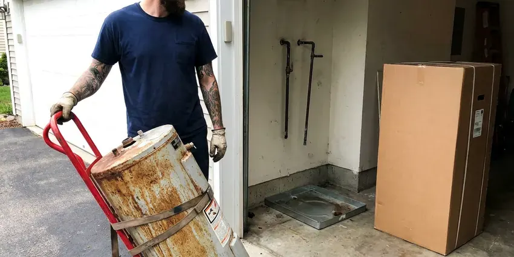
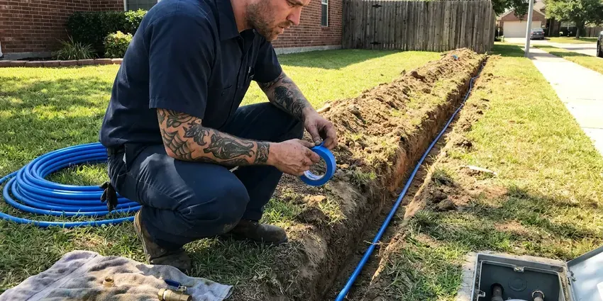
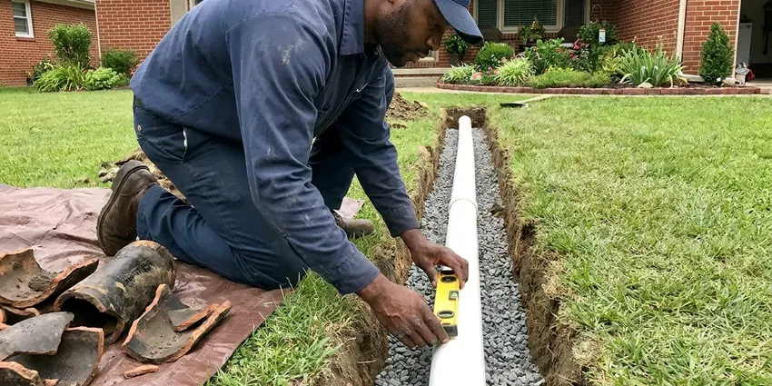

Pipe Replacement in Owensboro, KY
For expert pipe replacement in Owensboro, KY, count on the local specialists at BFK Plumbing. We handle everything from small sections to whole-home re-piping with care.
- Small, Planned Wall Openings
- Prompt, Reliable Service
- Quick, Dependable Service
- Upfront Pricing

Reliable Pipe Replacement Services in Owensboro, KY.
Don't let old or damaged pipes lead to bigger problems. Contact BFK Plumbing for a professional assessment.
Professional Pipe Replacement Services in Owensboro, KY
BFK Plumbing replaces corroded galvanized, brittle polybutylene and leak-prone copper with modern PEX-A or Type L copper. We handle partial replacements, whole-home repipes and drain line upgrades in single-story slab homes and two-story houses as well.
Our expertise includes:
- Galvanized, polybutylene and pinhole-leak copper replacement
- Slab leak pipe repair and replacement
- Corrosion and burst pipe remediation

Additional Plumbing Replacement Services in Owensboro, KY
When repairs are no longer enough, our replacement services in Owensboro, KY deliver durable upgrades that restore full performance.


Professional water heater replacement, Owensboro



Water Line Replacement in Owensboro

Customers
Why Choose BFK Plumbing for Pipe Replacement in Owensboro, KY?
Our expertise in Owensboro, KY plumbing ensures your pipe replacement is handled efficiently and correctly the first time. We use only durable, code-compliant materials for every project.
- Skilled Technicians, Our plumbers are highly trained and experienced in all aspects of pipe replacement, delivering precise and efficient work.
- Clear Communication, We keep you informed throughout the entire pipe replacement process, from initial assessment to project completion.
- Code Compliant, All pipe replacement work adheres closely to local Owensboro, KY plumbing codes and industry best practices.
Citywide Coverage
No matter where your home is located in Owensboro, BFK Plumbing provides fast and professional pipe replacement services. We're committed to ensuring every resident has access to reliable plumbing solutions.
Experienced Team
The BFK Plumbing team has successfully completed countless pipe replacement jobs, addressing a wide range of issues from burst pipes to corroded systems. Their expertise supports a smooth and efficient process for your home.
Safety-First Approach
We follow local plumbing code for pipe sizing, support spacing, nail plates and fitting types. Permits are pulled and inspections are booked before walls are closed.
Trusted Certified Owensboro Plumbing Services Professionals
At BFK Plumbing, we take pride in providing licensed, certified plumbing services throughout Owensboro, KY. Backed by recognized industry credentials, our experienced plumbers combine technical skill with genuine customer care. Whether it is repair, installation, or maintenance, we follow strict safety and quality standards to deliver lasting results you can trust.
Call Us Now PHCC Plumbing Contractor Recognition
PHCC Plumbing Contractor Recognition Better Business Bureau (BBB) Accreditation
Better Business Bureau (BBB) Accreditation Angi Certified Pro
Angi Certified Pro ISO 9001 Quality Management Certification
ISO 9001 Quality Management CertificationReliable Pipe Replacement Services in Owensboro, KY
PEX Pipe Installation in Owensboro
PEX (cross-linked polyethylene) piping is a common choice for modern pipe replacement projects in Owensboro due to its flexibility, durability, and resistance to corrosion and freezing. It's also less expensive to install than copper. Water softeners are a common upgrade in Kentucky homes, protecting tank water heaters, faucets, and appliances from mineral buildup. BFK Plumbing carefully installs PEX piping for full home repipes or targeted section replacements, providing a reliable and long-lasting plumbing solution that handles local water conditions well.

Corroded Pipe Replacement in Owensboro, KY
Many older homes in Owensboro, KY still have galvanized steel pipes, which are prone to internal corrosion over time. This corrosion chokes water flow, reduces water pressure, and can introduce rust particles into your drinking water. Our pipe replacement service targets these corroded sections, replacing them with new, non-corrosive materials like PEX or copper. This restores proper water flow and ensures clean, fresh water throughout your home.
Emergency Pipe Replacement in Owensboro, KY
A burst pipe is a plumbing emergency that requires immediate attention to prevent extensive water damage. BFK Plumbing offers emergency pipe replacement services across Owensboro, KY. Our rapid response team is equipped to promptly assess the damage, shut off the water, and perform the necessary repairs or replacements. We understand the urgency of these situations and work steadily to restore your plumbing system and minimize disruption to your home.
Polybutylene Pipe Replacement in Owensboro
Gray polybutylene pipe was installed in many homes from the late 1970s into the mid-1990s. It breaks down from the inside when exposed to chlorinated water, and fittings can crack with no warning. Some insurers raise premiums or decline coverage on homes that still have it. We remove polybutylene supply lines and replace them with PEX-A or copper. A completed repipe can also help when listing the home.
PEX Pipe Replacement in Owensboro
PEX (cross-linked polyethylene) piping has become a popular choice for residential pipe replacement due to its flexibility, affordability, and resistance to freezing. Hard freezes happen most winters in Kentucky, and pipes in crawlspaces, exterior walls, and unheated garages are the most at risk. Unlike rigid pipes, PEX can expand, reducing the risk of burst pipes during sudden cold snaps. BFK Plumbing specializes in PEX installation, which often allows for less invasive replacement methods compared to traditional materials. This modern solution offers excellent performance and water quality for your home.
Drain Pipe Replacement in Owensboro, KY
Cast iron drain pipe in older homes can rust through at the bottom, while some ABS from the 1980s was made with defective resin that cracks. Signs include sewer odors, slow drains and stains on ceilings below upstairs bathrooms. We camera the line first, then replace reachable sections with PVC or ABS. Under-slab drains can be tunneled, rerouted or lined depending on location. We explain the options with the camera footage in hand.
PEX Repiping in Owensboro
PEX-A is flexible, resists scale buildup and expands slightly if water freezes, which helps in colder homes. We use expansion fittings that keep the full inside diameter of the pipe for stronger flow. Systems can be run as a home-run manifold with a shutoff for each fixture or as a trunk and branch layout. PEX installs faster than copper with many fewer fittings in the walls. It is our most popular repipe material.

Slab Leak Pipe Repair and Replacement in Owensboro
Slab leaks, where pipes under your concrete foundation leak, are a significant concern for homeowners in Owensboro. These leaks can cause foundation damage, mold growth, and wasted water. BFK Plumbing uses modern leak detection technology to pinpoint the exact location of the leak. Depending on the severity and accessibility, we offer targeted pipe repair or rerouting and replacement solutions to fully resolve the issue, protecting your home's structural integrity.
Pipe Replacement Near Me in Owensboro, KY
A nearby team also means faster response if a leak shows up before your scheduled repipe. We can patch the immediate problem and fold it into the larger project. Call us for a clear, written estimate.
Choosing a local company like BFK Plumbing for your pipe replacement means you get personal service from plumbers who know the local infrastructure and regulations in Owensboro, KY. We are committed to serving our community with honest advice and high-quality workmanship, ensuring your plumbing system is sturdy and reliable for years to come.
BFK Plumbing at a Glance
- Fully licensed plumbing team covering Owensboro, KY
- Same-day appointments and 24/7 emergency response
- Upfront, flat-rate pricing before work begins
- 4.8-star rated by 309+ Kentucky customers
Owensboro Map
Owensboro Information
- Population
- 60,140
- Area codes
- 270/364/812
- Service area
- Owensboro and communities within 40 miles
- Nearby
- Henderson, Radcliff, Bowling Green, Hopkinsville
Ground movement and temperature changes can stress older pipes, so dependable pipe replacement is crucial for maintaining a healthy plumbing system in your Owensboro, KY home.
Expert Services
Trust our professionals for reliable BFK Plumbing solutions in Owensboro, KY.
Our Specialized Plumbing Services in Owensboro, KY
At BFK Plumbing, we provide a complete range of plumbing services across Owensboro, KY. From leak detection to full system installations, our team ensures fast, precise, and affordable service for both residential and commercial properties. Explore our core services below:


How Our Pipe Replacement Process Works in Owensboro, KY
Here is how we take your home from leaking pipes to a fully tested new system.
Request a Quote
Call (502) 300-9896 and tell us about leaks, pressure or water color problems. We schedule an on-site inspection.
Inspect and Plan
We identify your pipe materials and map routes through the attic and walls. You get a written quote with materials, timeline and patching plan.
Replace and Test
We install the new lines, pressure test the system and pass inspection. Then we patch openings and tidy up.
Frequently Asked Questions About Pipe Replacement in Owensboro
The cost of pipe replacement in Owensboro, KY varies widely based on the scope of work, materials chosen (PEX vs. copper), and accessibility. A small section replacement might range from $500 to $2,000, while a whole-home re-pipe can range from $5,000 to $20,000 or more. BFK Plumbing provides detailed, upfront estimates after a complete on-site assessment, ensuring transparency with no hidden fees.
Small accessible repairs may be possible for experienced DIYers. Whole-home repiping requires proper tools, code knowledge, permits and inspection.
Yes, for significant pipe replacement projects, especially whole-home repipes or changes to the main water or sewer lines, permits are typically required by local building codes. BFK Plumbing handles all necessary permits and inspections to ensure your project complies with local regulations.
While minor repairs might be attempted by experienced DIY enthusiasts, full pipe replacement is a complex job that should be left to licensed professionals. Incorrect installation can lead to costly leaks, water damage, and code violations. Our Owensboro plumbers have the tools, training, and experience to do the job right.
Yes, significant plumbing work like whole-home re-piping or major section replacement in Owensboro usually requires a plumbing permit from the local building department. This ensures the work meets local codes and is correctly inspected. BFK Plumbing handles all necessary permit applications and inspections as part of our service.
Yes, most homeowners stay home during the project. Water is off only during working hours, and we keep work areas safe and tidy.
We install PEX-A from brands like Uponor and Rehau, plus Type L copper. Both are code approved and built to last for decades.
Modern PEX pipes typically last 25 to 50 years, and copper pipes can last 50 to 70 years or even longer, depending on water quality and installation. This is a major improvement over older materials like galvanized steel, which often fail within 20 to 50 years.
What People Are Saying About Our Plumbing Experts?

Emily R.
I called BFK Plumbing for plumbing repair, and the technician was fast, polite, and thorough. They explained the problem clearly and fixed it the same day. I will definitely hire them again. Highly recommended!
Plumbing Repair · Radcliff, KY
Patricia H.
We had a slab leak that two other companies could not find. BFK Plumbing located it in under an hour, explained our options, and the price matched the quote to the dollar.
Slab Leak Repair · Radcliff, KY
Mark T.
When our office needed drain cleaning, BFK Plumbing provided quick, reliable service. The plumber arrived on time and made sure every drain flowed perfectly before leaving. Very satisfied.
Drain Cleaning · Elizabethtown, KY
Daniel K.
A pipe burst at 11 pm and they actually answered. The plumber showed up within the hour, shut everything down, and had us back to normal the next morning. Could not ask for more.
Emergency Plumbing · Louisville, KY
Sofia M.
Two new toilets installed in one visit, no mess left behind, and the tech even adjusted a faucet he noticed was dripping. Fair pricing and really friendly.
Toilet Installation · Bowling Green, KYLaura S.
I scheduled a water heater replacement, and the team made the process smooth and affordable. The new unit works perfectly, and they cleaned up after completing the job.
Water Heater Replacement · Louisville, KY